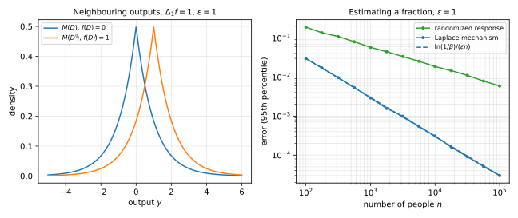

4 The Laplace mechanism
Randomized response privatizes one bit per person. But most questions an analyst asks are numbers computed from the whole dataset, such as a count or a histogram. This chapter answers them with the Laplace mechanism, which computes the true answer and adds noise scaled to how much one person can change it. On the fraction of ones with privacy parameter \(\varepsilon\), its error is of order \(1/(\varepsilon n)\) rather than the \(1/(\varepsilon\sqrt n)\) of randomized response. The chapter then proves three properties of differential privacy (DP) that let you build private algorithms from private parts: post-processing, group privacy and basic composition.
4.1 Sensitivity
The output must hide the contribution of any one person, so the noise must be at least as large as the change that one person can cause in the answer. The sensitivity measures the largest such change. Recall from the randomized response chapter that two datasets are neighbours, written \(D \sim D'\), when they differ in exactly one record.
Definition 4.1 (ℓ1 sensitivity) Let \(f\colon\mathcal X^n \to \mathbb R^k\) map a dataset of \(n\) records to a vector of \(d\) numbers. The \(\ell_1\) sensitivity of \(f\) is the largest change in \(f\), measured by the sum of the absolute changes of its coordinates, between neighbours \(D \sim D'\):
\[ \Delta_1 f = \sup_{D \sim D'}\|f(D) - f(D')\|_1 , \tag{4.1}\]
where \(\|v\|_1 = \sum_{j=1}^d|v_j|\) for a vector \(v \in \mathbb R^d\).
The \(\ell_1\) norm is what makes the privacy proof of Theorem 4.1 work. Other mechanisms use other norms, such as the \(\ell_2\) norm for the Gaussian mechanism of the next chapter. For \(d = 1\) all these norms are the absolute value, and for \(d > 1\) the \(\ell_1\) and \(\ell_2\) sensitivities can differ by a factor of up to \(\sqrt d\).
The running example of this chapter is the fraction of ones that randomized response estimates. Its sensitivity is small, because one person moves the fraction only a little.
Example 4.1 Let \(\mathcal X = \{0,1\}\) and let \(f(D) = \frac1n\sum_{i=1}^n x_i\) be the fraction of ones. Changing one bit changes the sum by at most \(1\), so \(\Delta_1 f = 1/n\).
4.2 The Laplace distribution
The noise must hide a shift of the true answer by up to the sensitivity. A density that falls exponentially in the distance from zero does this, because a shift by a fixed amount changes its value by at most a fixed factor. The Laplace distribution is the simplest such density.
Definition 4.2 (Laplace distribution) The Laplace distribution \(\mathrm{Lap}(b)\) with scale \(b > 0\) has density
\[ \frac{1}{2b}\exp\!\left(-\frac{|x|}{b}\right), \qquad x \in \mathbb R. \tag{4.2}\]
It is a two-sided exponential distribution: the exponential density, proportional to \(e^{-x/b}\) on \([0,\infty)\), reflected to the negative half-line. Its tails decay like \(e^{-|x|/b}\), more slowly than a Gaussian’s but still exponentially. The accuracy of the mechanism rests on three facts about this distribution: its mean, its variance and the exact size of its tails.
Lemma 4.1 Let \(Z \sim \mathrm{Lap}(b)\). Then \(\mathbb E[Z] = 0\), \(\operatorname{Var}(Z) = 2b^2\), and for every \(t \ge 0\),
\[ \Pr[|Z| \ge tb] = e^{-t}. \tag{4.3}\]
Proof.
- The density is symmetric about \(0\), so the mean is \(0\).
- The absolute value \(|Z|\) has density \(\frac1b e^{-u/b}\) on \([0,\infty)\), the exponential distribution with mean \(b\). Its second moment is \(\int_0^\infty u^2\frac1be^{-u/b}\,\mathrm d u = 2b^2\), by integrating by parts twice. Since the mean of \(Z\) is \(0\), \(\operatorname{Var}(Z) = \mathbb E[Z^2] = 2b^2\).
- The tail of \(|Z|\) is \(\int_{tb}^\infty \frac1be^{-u/b}\,\mathrm d u = e^{-t}\).
4.3 The Laplace mechanism
The mechanism adds independent Laplace noise to each coordinate, with scale equal to the sensitivity divided by \(\varepsilon\).
Definition 4.3 (Laplace mechanism) For \(f\colon\mathcal X^n\to\mathbb R^d\) with \(0 < \Delta_1 f < \infty\) and for \(\varepsilon > 0\), the Laplace mechanism outputs
\[ M(D) = f(D) + (Z_1, \dots, Z_d), \tag{4.4}\]
where \(Z_1, \dots, Z_d\) are independent with distribution \(\mathrm{Lap}(\Delta_1 f/\varepsilon)\).
Before the privacy proof, consider the accuracy of the mechanism on the running example. The mechanism is unbiased, and Lemma 4.1 gives its error.
Example 4.2 For \(f(D) = p\), the fraction of ones, Example 4.1 gives \(\Delta_1 f = 1/n\). The mechanism outputs \(\tilde p = p + Z\) with \(Z \sim \mathrm{Lap}(1/(\varepsilon n))\). So \(\mathbb E[\tilde p] = p\), and \(\operatorname{Var}(\tilde p) = 2/(\varepsilon n)^2\). By Equation 4.3 with \(t = \ln(1/\beta)\), with probability at least \(1 - \beta\),
\[ |\tilde p - p| \le \frac{\ln(1/\beta)}{\varepsilon n}. \tag{4.5}\]
With \(\varepsilon = 1\), \(n = 10{,}000\) and \(\beta = 0.05\), this is \(\ln(20)/10{,}000 = 3.0\times 10^{-4}\). Randomized response with the same \(\varepsilon\), \(n\) and \(\beta\) has the bound \(0.0294\), which is \(98\) times larger.
The gap grows with \(n\), because randomized response has error of order \(1/(\varepsilon\sqrt n)\) and the Laplace mechanism of order \(1/(\varepsilon n)\). The price of the smaller error is a trusted curator who sees the true data, which randomized response does not need. It remains to prove that the mechanism is private.
Theorem 4.1 (Privacy of the Laplace mechanism) For every \(f\colon\mathcal X^n\to\mathbb R^d\) with \(0 < \Delta_1 f < \infty\) and every \(\varepsilon > 0\), the Laplace mechanism is \(\varepsilon\)-DP.
Proof.
- Fix neighbours \(D \sim D'\), and write \(p\) and \(q\) for the densities of \(M(D)\) and \(M(D')\) on \(\mathbb R^d\). In this proof \(p\) is a density, not the fraction of ones. Let \(b = \Delta_1 f/\varepsilon\). The coordinates are independent, so at a point \(y \in \mathbb R^d\),
\[ \frac{p(y)}{q(y)} = \prod_{j=1}^d \frac{\exp(-|f(D)_j - y_j|/b)}{\exp(-|f(D')_j - y_j|/b)} = \exp\!\left(\frac{\varepsilon}{\Delta_1 f}\sum_{j=1}^d\big(|f(D')_j - y_j| - |f(D)_j - y_j|\big)\right). \tag{4.6}\]
- By the triangle inequality, \(|f(D')_j - y_j| - |f(D)_j - y_j| \le |f(D')_j - f(D)_j|\) for each \(j\). Summing over \(j\) gives at most \(\|f(D) - f(D')\|_1\), which is at most \(\Delta_1 f\) by Definition 4.1. So \(p(y) \le e^\varepsilon q(y)\) for every \(y\).
- For an event \(S \subseteq \mathbb R^d\), integrate the pointwise bound over \(S\): \(\Pr[M(D)\in S] = \int_S p \le e^\varepsilon\int_S q = e^\varepsilon\Pr[M(D')\in S]\).
The proof shows why the Laplace distribution fits the definition. Its density falls exponentially in the distance from the true value, and the definition bounds a ratio by an exponential. So a shift of the centre by the sensitivity changes the density by a factor of at most \(e^\varepsilon\). Figure 4.1 shows the two densities for a one-dimensional statistic.

4.4 Counting queries
A counting query asks how many people in the dataset have some property. It is given by a predicate \(\phi\colon\mathcal X \to \{0,1\}\) and has the value \(f(D) = \sum_{i=1}^n\phi(x_i)\). One record changes the count by at most \(1\), so \(\Delta_1 f = 1\), and the Laplace mechanism adds \(\mathrm{Lap}(1/\varepsilon)\). By Equation 4.3, its error is at most \(\ln(1/\beta)/\varepsilon\) with probability \(1-\beta\), whatever the size of the dataset.
Often an analyst asks many counting queries \(f = (f_1, \dots, f_k)\), with predicates \(\phi_1, \dots, \phi_k\), on the same data, such as whether a person smokes and whether their income is above a threshold. One person can then change all of the answers at once.
Proposition 4.1 The vector of \(k\) counting queries has \(\ell_1\) sensitivity at most \(k\), with equality when some record satisfies every predicate and another satisfies none. For every \(\beta \in (0,1)\), with probability at least \(1 - \beta\), the Laplace mechanism answers all \(k\) queries with error at most
\[ \frac{k\ln(k/\beta)}{\varepsilon}. \tag{4.7}\]
Proof.
- Let \(D\) and \(D'\) differ in one record, \(x\) in \(D\) and \(x'\) in \(D'\). In each query the other terms cancel, so \(\|f(D) - f(D')\|_1 = \sum_{j=1}^k|\phi_j(x) - \phi_j(x')| \le k\). The sum equals \(k\) when \(\phi_j(x) = 1\) and \(\phi_j(x') = 0\) for all \(j\).
- The noise in each answer is \(\mathrm{Lap}(k/\varepsilon)\). By Equation 4.3 with \(t = \ln(k/\beta)\), each noise is at least \(k\ln(k/\beta)/\varepsilon\) in absolute value with probability \(\beta/k\).
- The union bound over the \(k\) answers gives a failure probability of at most \(\beta\).
This analysis needs all \(k\) queries to be fixed in advance. The composition theorem of Section 4.6 gives the same privacy when each query is chosen after seeing the earlier answers.
Compare this error of order \(k/\varepsilon\) per query with the reconstruction chapter, where about \(n\) counting queries answered with error \(o(\sqrt n)\) let an attacker recover almost the whole dataset. Here, \(n\) counting queries get error of order \(n/\varepsilon\), up to a logarithm. The wide gap between \(\sqrt n\) and \(n\) is real slack: advanced composition, under a relaxation of the definition, lowers the error to about \(\sqrt{k}/\varepsilon\) per query, up to logarithmic factors.
4.5 Histograms
When the queries have structure, a sharper sensitivity bound is possible. In a histogram, each record falls into exactly one of \(k\) bins, such as an age in whole years, and the query counts the records in each bin: \(f_j(D) = |\{i : x_i \text{ is in bin } j\}|\).
Proposition 4.2 A histogram with \(k \ge 2\) bins has \(\ell_1\) sensitivity \(2\). For every \(\beta \in (0,1)\), with probability at least \(1-\beta\), the Laplace mechanism, which adds \(\mathrm{Lap}(2/\varepsilon)\) to each bin, answers every bin with error at most
\[ \frac{2\ln(k/\beta)}{\varepsilon}. \tag{4.8}\]
Proof.
- Let \(D\) and \(D'\) differ in one record, which lies in bin \(a\) in \(D\) and in bin \(a'\) in \(D'\). If \(a = a'\) the histograms are equal. Otherwise count \(a\) drops by \(1\) and count \(a'\) rises by \(1\), so \(f(D) - f(D') = e_a - e_{a'}\), where \(e_j\) is the \(j\)-th unit vector, and \(\|e_a - e_{a'}\|_1 = 2\).
- By Equation 4.3 with \(t = \ln(k/\beta)\), each of the \(k\) noises is at least \(2\ln(k/\beta)/\varepsilon\) in absolute value with probability \(\beta/k\). The union bound over the bins finishes the proof.
The sensitivity is \(2\) because a replacement moves a record from one bin to another. A single bin has error at most \(2\ln(1/\beta)/\varepsilon\) with probability \(1-\beta\), and the proposition pays only \(\ln k\) more to control all bins at once. So private histograms over very large domains are practical. For \(k = 100\) bins, \(\varepsilon = 1\) and \(\beta = 0.05\), the bound is \(2\ln(2000) = 15.20\), and in a simulation of 20,000 runs the 95th percentile of the largest error is \(15.17\). The same \(100\) bins treated as arbitrary counting queries would get the bound \(100\ln(2000) = 760.1\) from Proposition 4.1.
4.6 Properties of differential privacy
Three properties let you reason about a private algorithm piece by piece.
4.6.1 Post-processing
No computation on a private output can undo its privacy, as long as the computation does not look at the data again. The randomized response chapter used this to turn the private reports into an estimate.
Theorem 4.2 (Post-processing) Let \(M\colon\mathcal X^n\to\mathcal Y\) be \(\varepsilon\)-DP, and let \(F\colon\mathcal Y\to\mathcal Z\) be a randomized map whose coins are independent of those of \(M\). Then \(F\circ M\) is \(\varepsilon\)-DP.
Proof.
- A randomized map is a random choice of a deterministic one. Write \(F(y) = g_R(y)\), where \(R\) is the coins of \(F\) and each \(g_r\colon\mathcal Y\to\mathcal Z\) is deterministic.
- Fix neighbours \(D \sim D'\) and an event \(S\subseteq\mathcal Z\). For fixed coins, \(g_R(M(D))\in S\) exactly when \(M(D) \in g_R^{-1}(S)\), so
\[ \Pr[F(M(D))\in S] = \mathbb E_R\Big[\Pr\big[M(D)\in g_R^{-1}(S)\big]\Big]. \tag{4.9}\]
- Inside the expectation, apply the definition of \(\varepsilon\)-DP to the event \(g_R^{-1}(S)\), then undo step 2 for \(D'\):
\[ \mathbb E_R\Big[\Pr\big[M(D)\in g_R^{-1}(S)\big]\Big] \le e^\varepsilon\,\mathbb E_R\Big[\Pr\big[M(D')\in g_R^{-1}(S)\big]\Big] = e^\varepsilon\Pr[F(M(D'))\in S]. \tag{4.10}\]
4.6.2 Group privacy
The definition protects one record. Datasets that differ in several records, such as the records of one family, are still protected, with a guarantee that degrades in proportion to their number.
Theorem 4.3 (Group privacy) Let \(M\colon\mathcal X^n\to\mathcal Y\) be \(\varepsilon\)-DP, and let \(D, D'\in\mathcal X^n\) differ in \(k\) records. For every event \(S\subseteq\mathcal Y\),
\[ \Pr[M(D)\in S] \le e^{k\varepsilon}\Pr[M(D')\in S]. \tag{4.11}\]
Proof.
- The proof is a hybrid argument. Change the \(k\) differing records one at a time, from their values in \(D\) to their values in \(D'\). This gives datasets \(D = D^{(0)}, D^{(1)}, \dots, D^{(k)} = D'\) in which each consecutive pair are neighbours.
- Apply the definition to each consecutive pair, from the first to the last:
\[ \Pr[M(D^{(0)})\in S] \le e^\varepsilon\Pr[M(D^{(1)})\in S] \le e^{2\varepsilon}\Pr[M(D^{(2)})\in S] \le \dots \le e^{k\varepsilon}\Pr[M(D^{(k)})\in S]. \tag{4.12}\]
So a group of \(k\) people has the protection of \(k\varepsilon\)-DP, which means something only while \(k\varepsilon\) is small. The theorem also relates the two kinds of neighbours of the randomized response chapter. A replacement is a removal followed by an addition, so \(\varepsilon\)-DP under add/remove neighbours gives \(2\varepsilon\)-DP under replace-one neighbours.
4.6.3 Basic composition
An analyst rarely runs one mechanism. Usually each mechanism is chosen in the light of the outputs of the earlier ones and runs on the same dataset.
Definition 4.4 (Adaptive composition) Let \(M_1, \dots, M_k\) be mechanisms. For each \(i\) and each sequence of earlier outputs \(y_{<i} = (y_1, \dots, y_{i-1})\), the mechanism \(M_i(\cdot\,; y_{<i})\) takes the dataset \(D\) and returns \(y_i\). Their adaptive composition \(M\) runs them in order on the same \(D\), each with fresh coins, and releases \((y_1,\dots,y_k)\).
Basic composition says that the privacy parameters add up, even though each mechanism may depend on the earlier outputs.
Theorem 4.4 (Basic composition) If each \(M_i(\cdot\,; y_{<i})\) is \(\varepsilon_i\)-DP for every \(y_{<i}\), then the adaptive composition of \(M_1, \dots, M_k\) is \(\big(\sum_{i=1}^k\varepsilon_i\big)\)-DP. In particular, \(k\) mechanisms that are each \(\varepsilon\)-DP compose to a \(k\varepsilon\)-DP mechanism.
The proof is simplest for countable outputs, where the probability of a sequence of outputs factors into conditional probabilities.
Proof. Countable outputs.
- Fix neighbours \(D \sim D'\) and outputs \(y = (y_1,\dots,y_k)\). Each \(M_i\) uses fresh coins, so the chain rule gives \(\Pr[M(D) = y] = \prod_{i=1}^k\Pr[M_i(D; y_{<i}) = y_i]\), and likewise for \(D'\).
- Each factor for \(D\) is at most \(e^{\varepsilon_i}\) times the matching factor for \(D'\), by the privacy of \(M_i(\cdot\,; y_{<i})\) applied to the event \(\{y_i\}\). Multiplying the \(k\) bounds gives
\[ \Pr[M(D) = y] = \prod_{i=1}^k\Pr[M_i(D; y_{<i}) = y_i] \le \prod_{i=1}^k e^{\varepsilon_i}\Pr[M_i(D'; y_{<i}) = y_i] = \exp\!\Big(\sum_{i=1}^k\varepsilon_i\Big)\Pr[M(D') = y]. \tag{4.13}\]
- The pointwise lemma of the randomized response chapter turns this bound on single outcomes into the definition.
For outputs that are not countable, such as the real numbers that the Laplace mechanism releases, the same idea works with averages in place of products. It uses one fact about functions \(h\) with values in \([0,1]\): if \(M\) is \(\varepsilon\)-DP, then for all neighbours
\[ \mathbb E[h(M(D))] \le e^\varepsilon\,\mathbb E[h(M(D'))]. \tag{4.14}\]
This is Lemma 3.2 of the randomized response chapter.
Proof. General outputs.
- The composition of the first \(k-1\) mechanisms is itself a mechanism, so by induction on \(k\) it suffices to treat \(k = 2\).
- Fix neighbours \(D \sim D'\) and an event \(S\) of pairs. For an output \(y_1\), write \(S_{y_1} = \{y_2 : (y_1,y_2)\in S\}\) and \(g_D(y_1) = \Pr[M_2(D; y_1)\in S_{y_1}]\), and define \(g_{D'}\) in the same way. Conditioning on the first output gives \(\Pr[M(D)\in S] = \mathbb E_{y_1\sim M_1(D)}[g_D(y_1)]\), and likewise for \(D'\).
- By the privacy of \(M_2(\cdot\,; y_1)\), \(g_D(y_1) \le e^{\varepsilon_2}g_{D'}(y_1)\) for every \(y_1\).
- The function \(g_{D'}\) takes values in \([0,1]\), so the fact above, applied to \(M_1\), gives
\[ \Pr[M(D)\in S] \le e^{\varepsilon_2}\,\mathbb E_{y_1\sim M_1(D)}[g_{D'}(y_1)] \le e^{\varepsilon_1+\varepsilon_2}\,\mathbb E_{y_1\sim M_1(D')}[g_{D'}(y_1)] = e^{\varepsilon_1+\varepsilon_2}\Pr[M(D')\in S]. \tag{4.15}\]
Basic composition recovers the analysis of Proposition 4.1. Each counting query with \(\mathrm{Lap}(k/\varepsilon)\) noise is \((\varepsilon/k)\)-DP, and \(k\) of them compose to \(\varepsilon\)-DP, now even when the analyst chooses the queries adaptively. So the cost of \(k\) analyses grows linearly in \(k\). It can grow like \(\sqrt k\) instead, but only under the relaxation of the definition that the next chapter introduces.
4.7 Summary
| Result | Statement |
|---|---|
| Definition 4.1 | \(\Delta_1 f\) is the largest \(\ell_1\) change in \(f\) between neighbours |
| Lemma 4.1 | \(\mathrm{Lap}(b)\) has variance \(2b^2\) and \(\Pr[\lvert Z\rvert \ge tb] = e^{-t}\) |
| Theorem 4.1 | adding \(\mathrm{Lap}(\Delta_1 f/\varepsilon)\) to each coordinate is \(\varepsilon\)-DP |
| Example 4.2 | a fraction of ones with error \(\ln(1/\beta)/(\varepsilon n)\) |
| Proposition 4.1 | \(k\) counting queries: sensitivity \(k\), error \(k\ln(k/\beta)/\varepsilon\) |
| Proposition 4.2 | a histogram: sensitivity \(2\), error \(2\ln(k/\beta)/\varepsilon\) over all bins |
| Theorem 4.2 | post-processing keeps \(\varepsilon\)-DP |
| Theorem 4.3 | datasets differing in \(k\) records: factor \(e^{k\varepsilon}\) |
| Theorem 4.4 | adaptive composition adds the \(\varepsilon_i\) |
4.8 References
- Cynthia Dwork, Frank McSherry, Kobbi Nissim and Adam Smith, “Calibrating Noise to Sensitivity in Private Data Analysis”, 2006. Defines sensitivity and the Laplace mechanism.
- Irit Dinur and Kobbi Nissim, “Revealing Information while Preserving Privacy”, 2003. Gives the reconstruction attacks that set the scale for the error.
- Cynthia Dwork and Aaron Roth, The Algorithmic Foundations of Differential Privacy, 2014. Covers the mechanism and its uses in Section 3.3, and the properties in Sections 2.3 and 3.5.
- Cynthia Dwork, Guy Rothblum and Salil Vadhan, “Boosting and Differential Privacy”, 2010. Proves advanced composition, which improves the linear growth of basic composition.